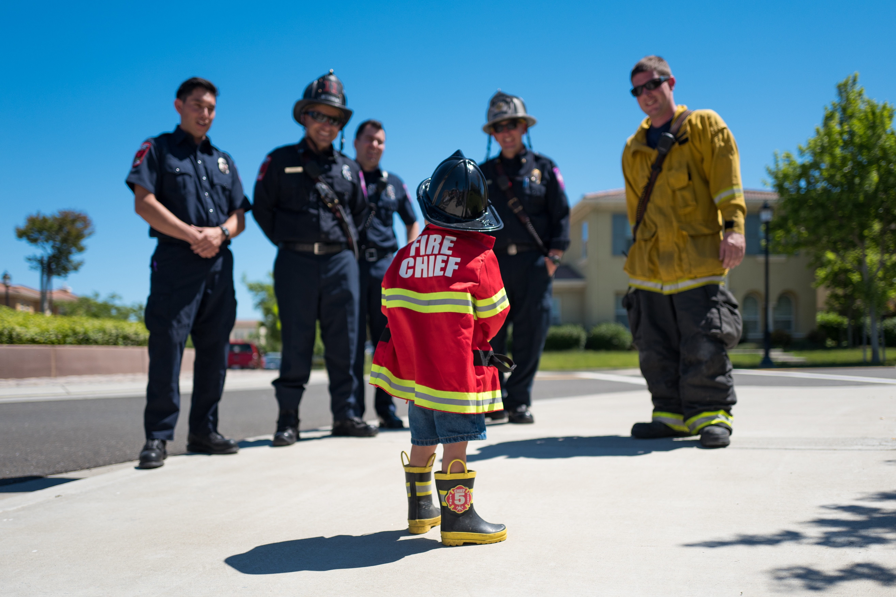

이 법은 화재를 예방ㆍ경계하거나 진압하고 화재, 재난ㆍ재해, 그 밖의 위급한 상황에서의 구조ㆍ구급 활동 등을 통하여 국민의 생명ㆍ신체 및 재산을 보호함으로써 공공의 안녕 및 질서 유지와 복리증진에 이바지함을 목적으로 한다.
1. "소방대상물"이란 건축물, 차량, 선박(「선박법」 제1조의2제1항에 따른 선박으로서 항구에 매어둔 선박만 해당한다), 선박 건조 구조물, 산림, 그 밖의 인공 구조물 또는 물건을 말한다.
2. "관계지역"이란 소방대상물이 있는 장소 및 그 이웃 지역으로서 화재의 예방ㆍ경계ㆍ진압, 구조ㆍ구급 등의 활동에 필요한 지역을 말한다.
3. "관계인"이란 소방대상물의 소유자ㆍ관리자 또는 점유자를 말한다.
4. "소방본부장"이란 특별시ㆍ광역시ㆍ특별자치시ㆍ도 또는 특별자치도(이하 "시ㆍ도"라 한다)에서 화재의 예방ㆍ경계ㆍ진압ㆍ조사 및 구조ㆍ구급 등의 업무를 담당하는 부서의 장을 말한다.
5. "소방대"(消防隊)란 화재를 진압하고 화재, 재난ㆍ재해, 그 밖의 위급한 상황에서 구조ㆍ구급 활동 등을 하기 위하여 다음 각 목의 사람으로 구성된 조직체를 말한다.
가. 「소방공무원법」에 따른 소방공무원
나. 「의무소방대설치법」 제3조에 따라 임용된 의무소방원(義務消防員)
다. 「의용소방대 설치 및 운영에 관한 법률」에 따른 의용소방대원(義勇消防隊員)
6. "소방대장"(消防隊長)이란 소방본부장 또는 소방서장 등 화재, 재난ㆍ재해, 그 밖의 위급한 상황이 발생한 현장에서 소방대를 지휘하는 사람을 말한다.